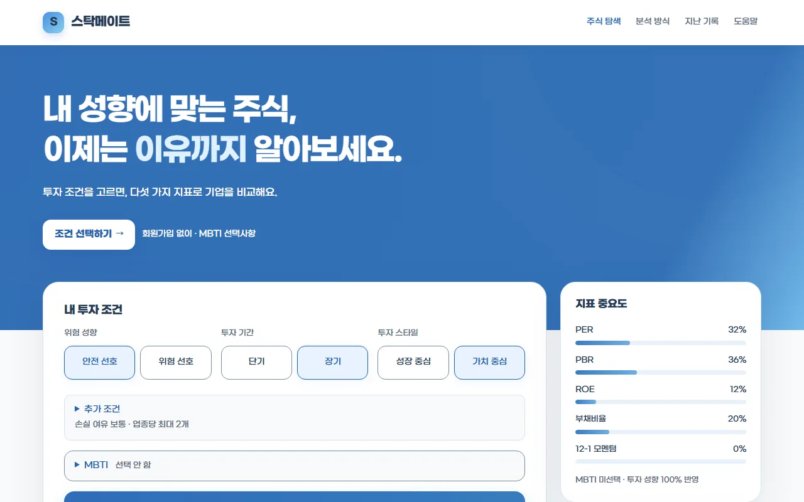
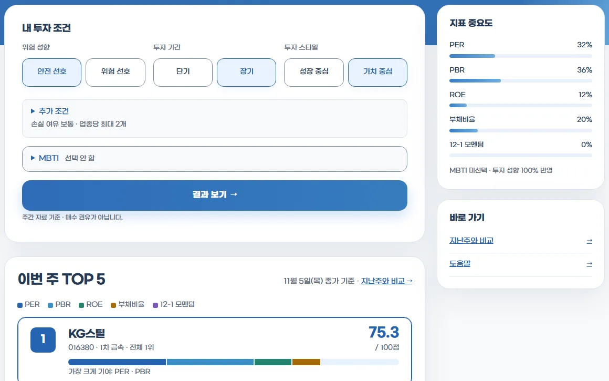
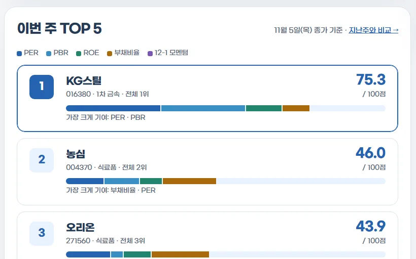

조건이 바뀌면 지표의 무게가 바뀐다
위험 성향·투자 기간·투자 스타일(원하면 MBTI까지)을 고르면 다섯 지표의 중요도가 정해진다. 각 지표는 같은 업종 안 백분위로 바꿔 업종 차이를 걷어낸 뒤 합산한다. 아래는 안전 선호 · 장기 · 가치 중심을 골랐을 때 실제 화면에 나온 중요도다.
위험 성향·투자 기간·투자 스타일을 고르면 KOSPI 종목을 PER·PBR·ROE·부채비율·모멘텀 다섯 지표로 같은 업종 안에서 비교해 0~100점으로 보여 주는 서비스입니다. 점수가 어떤 지표에서 나왔는지와 지난주 대비 변화까지 함께 보여 줍니다. 기획부터 데이터 수집·개발까지 혼자 맡고 있습니다.

같은 점수라도 어떤 지표에서 나왔는지에 따라 의미가 다릅니다. 스탁메이트는 조건에 맞춰 지표의 무게를 정하고, 그 결과를 매주 같은 기준으로 기록합니다.
위험 성향·투자 기간·투자 스타일(원하면 MBTI까지)을 고르면 다섯 지표의 중요도가 정해진다. 각 지표는 같은 업종 안 백분위로 바꿔 업종 차이를 걷어낸 뒤 합산한다. 아래는 안전 선호 · 장기 · 가치 중심을 골랐을 때 실제 화면에 나온 중요도다.
매주 토요일 09:00에 직전 거래일 종가 기준으로 TOP 5와 전체 순위를 발행한다. 한 번 발행한 결과는 수정할 수 없고, 자료가 부족하면 새로 발행하지 않고 이전 발행본을 그대로 둔다. 그래서 지난주와의 비교, 종목별 순위 추이, 제외 이유가 모두 같은 기준 위에 쌓인다.
2026-W45 스테이징 발행본 · 11월 5일 종가 기준 · 점수는 수익률이나 상승 확률이 아님
2026-11-06 실제 KRX·OpenDART 자료로 스테이징에 발행한 화면입니다. 회원가입 없이 조건을 고르고 결과를 볼 수 있고, 관심 기업과 조건 저장은 카카오 로그인 후 열립니다.

조건 세 가지와 선택 사항(추가 조건·MBTI)을 고르면 그 조건에 맞는 지표 중요도를 옆에 함께 보여 줍니다. 결과 버튼 바로 아래에 매수 권유가 아니라는 안내를 둡니다.

종목마다 0~100점과 지표별 기여 막대, 가장 크게 기여한 지표를 보여 줍니다. 기준 종가 날짜와 지난주 비교 링크를 제목 옆에 둡니다.
시세·공시 수집, 점수 계산, 발행, 외부 API 호출을 각각 따로 지켰습니다. 자료가 불확실하면 추정하지 않고 제외하는 것을 기본으로 했습니다.
기획 단계에서 만든 JavaScript 프로토타입을 TypeScript 순수 함수로 옮겼다. 816개와 184개 조합에서 점수가 프로토타입과 완전히 일치하는지 매번 검사하고, 의도한 차이는 결정 기록(ADR)으로만 허용한다.
점수는 직전 거래일 종가로만 계산하고 실시간 가격은 쓰지 않는다. 같은 입력이면 언제 돌려도 같은 순위가 나온다.
OpenDART는 공시 접수 시각을 주지 않는다. 그래서 공시는 접수 다음 거래일부터 점수에 반영해, 장중에 나온 공시가 그날 점수에 섞이지 않게 했다. 정정 공시는 원본 대신 정정본에 붙인다.
KRX는 휴장일과 미게시일 모두 빈 응답을 준다. 휴장일 목록으로 둘을 구분하고, 거래정지일 행과 검증되지 않은 수정주가는 추정하지 않고 제외한다.
스냅샷·발행본·공시 버전은 DB 권한과 트리거 두 겹으로 수정을 막았다. 같은 발행이 동시에 두 번 돌아도 잠금과 고유 제약으로 한 건만 남는다(동시 실행 테스트로 확인).
자료가 늦으면 마지막 시도 시각까지 기다리고, 그래도 없으면 이전 발행본을 유지한다. 조용히 다른 날짜 자료로 바꾸지 않는다.
키 교체 직후 대기 없이 재무 백필을 돌려 약 6분에 5,000건을 호출했고, OpenDART 접속이 약 1시간 차단됐다. 일일 한도만 지키면 된다는 가정이 틀렸다.
모든 요청 사이에 최소 150ms 간격을 두고, 연결 실패가 3번 이어지면 즉시 멈추도록 고쳤다. 이후 6,502회 호출에서 실패 0건, 11월 실데이터 백필 7,398회도 최종 실패 0건이었다.
2026-11-06 실제 자료로 스테이징 발행까지 마친 상태입니다. 운영 배포는 아직 하지 않았습니다.
11월 6일 실제 KRX·OpenDART 자료로 824개 종목을 조립해 2026-W45 발행본을 만들고, 375·768·1280 세 화면 폭에서 홈·탐색 화면을 확인했다.
카카오 로그인은 에셋헷지와 같은 카카오 앱을 함께 쓰되, 탈퇴는 서비스별로 따로 처리하도록 설계했다.
운영 배포, 토요일 정기 발행, 카카오 연결 해제 전체 흐름은 아직 실행하지 않았다. 점수는 수익률이나 상승 확률이 아닌 비교 정보다.